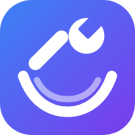

You are offline.
GetToolNest needs internet the first time; tools you opened before keep working. Live Charts (trading) always needs internet.

GetToolNest needs internet the first time; tools you opened before keep working. Live Charts (trading) always needs internet.